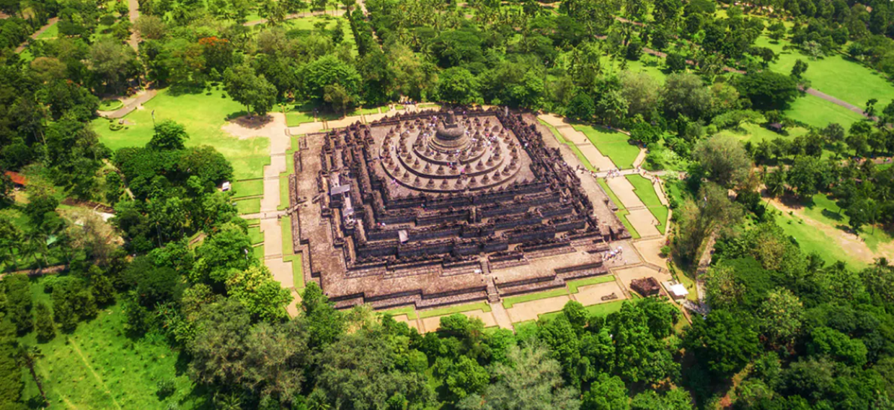
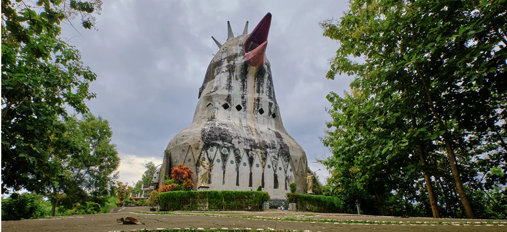
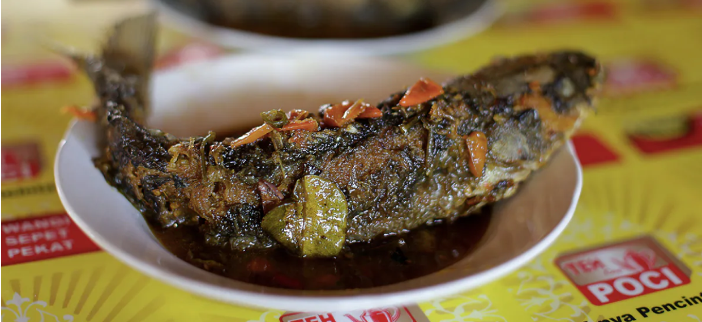

Sobat Pesona pastinya sudah tidak asing kan dengan Candi Borobudur? Terletak di Kabupaten Magelang, Jawa Tengah, candi yang sangat megah dan rupawan ini telah dikenal oleh wisatawan lokal maupun mancanegara sebagai kuil Buddha terbesar di dunia. Wajar saja, karena Candi Borobudur memiliki luas sekitar 2500 meter persegi, dengan panjang 121,66 meter, lebar 121,38 meter, dan tinggi 35,40 meter.
Selain dari skalanya yang besar, Candi yang sangat legendaris ini tentunya juga menyimpan beragam fakta unik, serta berbagai macam hal menarik yang bisa Sobat Pesona temui saat berkunjung kesini. Sebelum Sobat Pesona beranjak ke Candi Borobudur, simak dulu yuk ulasan lengkapnya di bawah ini!
Tak hanya menawarkan keajaiban dunia, di sini Sobat Pesona juga bisa menemukan beraneka ragam objek wisata lainnya yang tidak kalah menarik. Di sekitar candi, terdapat tiga museum yang Sobat Pesona bisa kunjungi untuk menambah wawasan, yaitu Museum Borobudur, Museum Kapal Samudraraksa, dan Museum MURI. Jika ada di antara Sobat Pesona yang ingin melihat pemandangan luar biasa Candi Borobudur dari kejauhan, maka Sobat Pesona wajib mendatangi Punthuk Setumbu yang berlokasi di bagian barat Candi Borobudur. Di sini, Sobat Pesona juga bisa menyaksikan indahnya matahari terbit atau terbenam di masing-masing ufuk.
Tak jauh dari Punthuk Setumbu, Sobat Pesona juga bisa menemukan sebuah bangunan yang memiliki bentuk unik jika berjalan ke arah utara. Bangunan yang berbentuk seperti ayam ini adalah gereja yang dibangun pada tahun 90-an dan dikenal sebagai Gereja Ayam oleh warga setempat. Jika Sobat Pesona masih belum puas, di bagian timur Candi Borobudur terdapat tiga buah candi kecil yang juga tak kalah bagus, yaitu Candi Pawon, Candi Ngawen, dan Candi Mendut. Ingin menghabiskan waktu lebih lama lagi di sekitar Candi Borobudur? Coba menginap ke Desa Wisata yang ada di sekitar Candi Borobudur aja! Diantaranya seperti Desa Wanurejo, Desa Karangrejo, Desa Tanjungsari, Desa Giritengah, Desa Majaksingi, dan Desa Candirejo.
Jika Sobat Pesona merasa lapar setelah menyambangi tempat-tempat keren tersebut, tidak ada salahnya untuk mencoba kuliner khas Magelang di sekitar Candi Borobudur yang begitu nikmat. Salah satu makanan yang paling terkenal di daerah ini adalah olahan ikan bernama mangut beong atau ndas beong. Coba juga lezatnya sego godog dan kupat tahu yang dapat memanjakan lidah Sobat Pesona. Masih lapar juga? Rasakan sedapnya sop senerek dan nasi lesah! Cita rasa yang mantap dari kedua hidangan ini bisa membuat Sobat Pesona menambah lagi dan lagi sampai puas.
Masih ingin merasakan nikmatnya kuliner khas Magelang? Tahu bacem dan tempe mendoan yang sering dijual di sekitar sini sangatlah cocok untuk dijadikan sebagai bekal perjalanan pulang Sobat Pesona.
Ada dua cara yang bisa Sobat Pesona tempuh untuk mencapai Magelang, yaitu melalui jalur udara dan jalur darat. Jalur udara bisa dicapai menggunakan pesawat terbang sedangkan jalur darat bisa ditempuh menggunakan transportasi mobil atau kereta api.
Alternatif lainnya adalah dengan menggunakan kereta api dari stasiun kota besar di Jawa menuju Stasiun Yogyakarta, baik di Stasiun Tugu atau Lempuyangan. Lalu, dilanjutkan dengan angkutan umum atau menyewa kendaraan ke Kota Magelang kurang lebih sekitar 1 jam perjalanan.